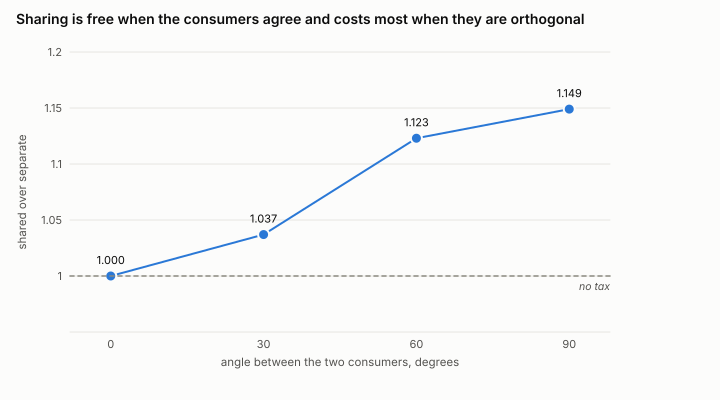

Chapter 29 — Observation for Estimation and Control
The earlier chapters composed the read operator $P_C$ with the error of a code. This chapter composes it with the error of a filter. A Kalman filter tracks a state $x$ and reports an estimate $\hat x$ together with an error covariance $\Sigma$, the covariance of $x-\hat x$. In this chapter $\Sigma$ always means that covariance, where earlier chapters used the same letter for a source covariance. The consumer $C$ reads the estimate, and to second order its loss is
$$ U_C \;=\; \operatorname{tr}(P_C\,\Sigma), \qquad P_C = J_C^{\top} G\, J_C , $$
with $J_C$ the Jacobian of the consumer and $G$ the metric on its output, as in Chapter 5.
The estimation-and-control campaign (OT-EC, paper paper/ot-estimation-control.tex)
asks what this number is good for: choosing sensors, deciding when to transmit, and
setting a control penalty.
Two propositions of the paper come first, numbered as there, then six measured results. Every measured result in this
chapter is [predicted]: a single governed run at a sealed seed, on synthetic linear
time-invariant systems with planted or frozen consumers, and none on hardware.
What is prior work and what the ledger records as new
The Kalman filter is Kalman’s (1960), and optimality of the posterior mean under a
weighted quadratic loss is classical. Weighted-trace objectives
$\operatorname{tr}(M\Sigma)$ for a weight $M$ chosen by the designer are established in
sensor selection, in sensing co-design for linear-quadratic-Gaussian (LQG) control
(Tzoumas, Carlone, Pappas and Karaman), in goal-oriented experimental design (Attia and
co-authors), and in value-of-information triggering (Soleymani, Baras, Hirche and
Johansson). Recovering a quadratic task metric from a black-box oracle by sampled
perturbations is in decision-focused learning (Shah and co-authors). The paper claims
none of these and concedes the analytic LQG case entirely
(paper/PRIOR-ART-SWEEP-estimation-control.md).
What the paper puts forward is a conjunction, stated as a hypothesis and not as a verdict of novelty: a read operator recovered under query access only, composed with the filter’s covariance, and tested prospectively, out of sample, at matched budgets that include the cost of the probes. The sweep found no single work that combines these, and it records that a referee could reasonably call the conjunction an integration.
Why the filter does not change for a fixed weight
Proposition 1 (weighted posterior-mean invariance). Let $X$ be an integrable random state with finite weighted conditional second moment, let $Y$ be the observations, and let $P$ be a weighting that does not depend on $X$, with positive semidefinite symmetric part. Over estimators $\hat x$ that are measurable functions of $Y$,
$$ \mathbb{E}\big[(X-\hat x)^{\top}P\,(X-\hat x)\mid Y\big] \;=\; \operatorname{tr}\big(P\,\Sigma_{X\mid Y}\big) + (m-\hat x)^{\top}P\,(m-\hat x), \qquad m=\mathbb{E}[X\mid Y], $$
so the posterior mean $\hat x=m$ is a minimizer. In the linear-Gaussian case $m$ is the Kalman estimate.
The three hypotheses on $X$, $\hat x$ and the second moment were missing from the prose until the fresh-context audit VI-11 named them. The same audit, which found no error, added two strengthenings: only the symmetric part of $P$ needs to be positive semidefinite, and $P$ may be any weighting measurable in $Y$.
A consumer whose read operator is constant therefore gains nothing from a reweighted filter, because the filter already minimizes every such loss at once. What remains to be decided is which covariance to buy. $\operatorname{tr}(P_C\Sigma)$ depends on the shape of $\Sigma$, and the shape is set by which sensors are read, when updates are sent, and what the controller penalizes. Those decisions are where the consumer enters.
When the read operator depends on the state. For a nonlinear consumer $P_C(x)$ varies with $x$, the loss is no longer a fixed-weight quadratic, and the invariance fails. Writing $P_s$ for the symmetric part of $P_C$, the minimizer is the tilted mean
$$ \hat x^{\star} \;=\; \big(\mathbb{E}[P_s(X)\mid Y]\big)^{-1}\,\mathbb{E}[P_s(X)\,X\mid Y], $$
whenever the averaged weighting is invertible, and it equals the posterior mean exactly when $\mathbb{E}[P_s(X)(X-m)\mid Y]=0$. VI-11 checked a counterexample in which the posterior mean loses by a factor of 25, and it narrowed what the paper had called an open problem: the single-stage tilted mean is a two-line completion of squares, and only the recursive, filtering form is open.
Proposition 2 (rank-one value of observation). Let the prior covariance $\Sigma^{-}$ be symmetric, let a scalar measurement be $y=h^{\top}x+v$ with noise variance $r>0$, and let $\Sigma^{+}$ be the covariance after the Kalman update. For a rank-one consumer $P_C=gg^{\top}$, the consumer-relative value of the observation is
$$ V_C \;=\; \operatorname{tr}\big(P_C(\Sigma^{-}-\Sigma^{+})\big) \;=\; \frac{\big(g^{\top}\Sigma^{-}h\big)^{2}}{h^{\top}\Sigma^{-}h+r}. $$
A sensor is valuable to the consumer when its direction $h$, carried through the current uncertainty, overlaps a direction $g$ the consumer reads. The covariance algebra is classical. The audit VI-12 found that symmetry of $\Sigma^{-}$ is the hypothesis that carries the identity. Without it the correct form is $(g^{\top}\Sigma h)(h^{\top}\Sigma g)/s$ with $s=h^{\top}\Sigma h+r$, and the squared form failed in 4,999 of 5,000 asymmetric draws. Positive semidefiniteness is not needed, and the condition on the denominator, silent in the first draft, is met by $r>0$. The audit’s own net of 65,000 draws agreed to a maximum relative deviation of $2.1\times10^{-14}$.
What the Lean statements cover. lean/README.md records that
weighted_mean_invariance checks Proposition 1 in its discrete form: for any matrix
with nonnegative quadratic form and any finite weights summing to one, the weighted mean
minimizes the expected quadratic loss. Signed weights are permitted. The paper’s
conditional-expectation statement is reached from this by a short bridge that is not
formalized, and the continuous case rests on the standard argument.
value_of_observation_rank_one checks the trace identity under $\Sigma^{\top}=\Sigma$
and a nonzero denominator; that second hypothesis is carried but unused, because Lean’s
convention $x/0=0$ makes the equation hold at $s=0$, so the formal statement is slightly
stronger than the paper’s. The ledger section for this campaign has no claim row for
either proposition, so I attach no class to them. What exists is the Lean check of the
discrete and matrix forms and the audits VI-11 and VI-12, each confirming with no error.
The flip, transferred to sensor schedules
Chapter 8’s flip compared two codes with matched reconstruction error. Here the two arms are sensor schedules. Let $\bar\Sigma$ be the time average of the filter covariance under a schedule. Two schedules are matched when their $\operatorname{tr}\bar\Sigma$ agree within 10%, and each is aligned to one of two planted consumers with read operators $P_1$, $P_2$.
In all of the matched systems (100%, gate at least 80%) the verdict inverted in full:
each consumer preferred its own schedule. $\operatorname{tr}(P_i\bar\Sigma)$ predicted
the loss ordering in 100% of cells (gate at least 85%), and the mean relative gap
between consumers was 31.8% (gate at least 10%) [predicted] (ledger row GO-EC-2,
registration 088, governed seed 20260821, 20 systems, all 6 gates passed). The limits
recorded in the row belong beside those numbers. Only 6 of the 20 systems met the trace
match, and the registered minimum was 6. A second gate, the isotropic-control fraction,
read 0.250 against a ceiling of 0.25. Both gates passed exactly at their bars. The
consumers were planted and orthogonal, the clean case. The first governed invocation
finished its measurement and crashed while writing its result file; the logs were
committed, a dated amendment fixed the serializer only, and the second invocation
reproduced the first line for line.
Blind recovery, then scheduling, with the probes charged
Chapter 10 recovers a read operator from the consumer’s outputs alone. Here the recovery is used to make a decision and is charged for. The pipeline is: probe the black box by finite differences to get $\hat P_C$, score candidate sensors by $\operatorname{tr}(\hat P_C\Sigma)$, select greedily, and judge on the held-out consumer. Every probe query is charged against the same budget as the sensors.
On a positive-control arm, where the consumer is analytic and its optimum is known, the
blind pipeline captured 94.6% of the known optimum’s gain (gate at least 75%). On
consumers with no closed form (a frozen low-rank network and a smoothed threshold,
paper/go-ec-3-bridge.tex) it improved 16.3% over the best consumer-agnostic policy
(gate at least 8%). Among trace-matched pairs the composition carried the ordering in
86.9% of 61 pairs (gate at least 65%) [predicted] (ledger row GO-EC-3, registration
087, governed seed 20260819, 20 systems, all 5 gates passed, a single run). Five
calibration pilots preceded the seal and are disclosed as design fixes. The controls: a
shuffled consumer gave $+0.080$, the policy that schedules against the recovered
operator was worst pooled in each arm, and the probe charge itself cost $+0.0030$, a
sensitivity row with no weight in the verdict. The systems are synthetic with planted
consumers.
The greedy selection carries no optimality claim. Weighted-trace objectives are not supermodular in general (Jawaid and Smith, 2015), so the classical $1-1/e$ guarantee does not transfer. Conditions under which it would are a named target of the paper and not a result.
This run has the shape of the learn-then-serve problem of Chapter 17: recover, charge the probing, then serve. It is a measurement in the sensing setting and not the theorem T1, which concerns codes.
When to transmit: the trigger must see the signal
A sensor holds the state and decides when to send it to a remote estimator. Let $e$ be the realized gap between the sensor’s state and the remote estimate. The operational trigger transmits when
$$ e^{\top}P_C\,e \;>\; \tau , $$
with threshold $\tau$ tuned to a transmission budget.
The first pilot for this experiment produced a registered null finding. A trigger built on the covariance alone, $\operatorname{tr}(P_C\Sigma_t)>\tau$, collapses to a nearly periodic schedule. The covariance recursion does not depend on the measurements, so at a fixed budget every functional of it fires on a clock, and the consumer weighting adds nothing. Direction matters to the timing only through the realized error.
With the signal-aware form, the trigger beat periodic and isotropic triggers by 20.0%
in arm P and 33.3% in arm N in mean relative consumer loss, at matched realized
transmission budgets (gate at least 10% in both arms). A trigger built on the blindly
recovered $\hat P_C$, with probes charged, captured 86.9% of the advantage of the true
operator (gate at least 75%) [predicted] (ledger row GO-EC-4, registration 089,
governed seed 20260822, 20 systems, all 6 gates passed, three disclosed pilots). The
setting is an idealized smart sensor that transmits the exact state. Noisy links are not
covered. The analytic ancestor is the value-of-information trigger of Soleymani, Baras
and Hirche, which is provably optimal in the LQG case.
A simulated free-space optical link
The consumer here is a physics-based model of a free-space optical link: a Gaussian far-field pattern and a fiber rolloff, over a hidden map from state to physical quantities, queried as a black box. Its endpoints are close to thresholds, where a local Hessian is degenerate, so the operator probed is the belief-averaged one,
$$ \bar P_C(b) \;=\; \mathbb{E}_{X\sim b}\big[J_C(X)^{\top}G(C(X))\,J_C(X)\big], $$
with $b$ the filter’s belief, in a smoothed finite-perturbation form.
$\operatorname{tr}(\bar P_C\bar\Sigma)$ predicted the ordering of physical coupling loss
between trace-matched schedules, before the loss was measured, in 94.1% of 17 pairs
(gate at least 80%). The probe-charged aligned schedule beat the best consumer-agnostic
policy by 12.5% in mean coupling loss (gate at least 4%). The blind operator captured
89.8% of a reference that used eight times the probes (gate at least 70%) [predicted]
(ledger row GO-EC-5, registration PREREG-EC5-001, governed seed 20260824, 20 systems,
all 6 gates passed, three disclosed pilots). The consumer is simulated, and a real
link needs its own seal. During the pilots the anti-operator control was respecified to
its pooled form.
The registration also seals a narrowed statement of prior art. Deriving sensor requirements from the link is established as a static flow-down of a pointing budget (JPL IPN 42-161); probing the coupling surface by nutation or stochastic parallel gradient descent is established for the fine-steering control loop; and scheduling by covariance exists without an optical application (Al Ahdab and co-authors). The looser claim, that nobody derives estimator requirements from the link, is conceded false.
The tax for serving two consumers
Chapter 26 prices one description that serves two read operators. The corresponding question here is one sensor budget serving two consumers. The measured quantity is the egalitarian tax: on the worse-off of the two consumers, the loss under the best shared schedule divided by the loss each consumer would get from a schedule of its own. The pairs were planted with their read subspaces at a controlled principal angle.
The ratio was 1.000, 1.037, 1.123 and 1.149 at 0°, 30°, 60° and 90°. Sharing was free
when the geometries coincided (gate at most 1.05 at 0°), the rise was monotone (gate at
least 0.05), and the tax at orthogonality was 14.9% (gate at least 1.05 at 90°).
Consumer-aware sharing beat consumer-agnostic sharing by 12.5% pooled on the worse of
the two (gate at least 5%) [predicted] (ledger row GO-EC-6, registration
PREREG-EC6-001, governed seed 20260826, all 6 gates passed, two disclosed pilots).
The two-observer coding theorem motivated the design and was not imported as a result.
One
further observation in the row is [exploratory], reported and not claimed: scalarized
joint scheduling did better than time-sharing in 72 of 80 cells at this budget. Nothing
in this chapter rests on it.

Figure 29.1. The measured tax for serving two consumers with one sensor schedule, against the principal angle between their read operators (ledger row GO-EC-6, predicted). The ratio compares the best shared schedule, judged by the worse-served consumer, with each consumer served alone. It is 1.000 when the two geometries coincide and 1.149 when they are orthogonal. Synthetic systems and planted consumers, one governed run.
Closed loop at matched control effort
Near a set point, $P_C$ is a candidate state penalty for an LQG controller. The test compares a penalty derived from the consumer with an isotropic one, on the consumer’s endpoint, with both arms spending the same control effort.
This result passed on its third seal, and the two failures come first. The first seal (PREREG-EC7-001, seed 20260828) failed its effort-matching integrity gate, in a way common to all arms. The second (PREREG-EC7-002, seed 20260830) failed its cross-arm spread gate, and that failure differed between arms: the paper reports the isotropic arms undershooting effort by about 35% in one system, a contaminated comparison. The prediction bars were inherited unchanged, and the predictions passed numerically in all three runs (the first gate read 0.083, 0.094 and 0.084), but no comparison was claimed from the first two. The row keeps them as context and never as evidence.
The third seal replaced matching by simulation with an analytic instrument. The Kalman
recursion does not depend on the control, so expected effort follows from propagating
the joint second moments of $(x,\hat x)$. With effort matched to a residual of
$10^{-5}$, the consumer-derived penalty beat the isotropic penalty by 8.4% on the
consumer endpoint (gate at least 4%). The probe-charged blind penalty captured 99.5% of
the oracle’s advantage (gate at least 60%). The full operator beat the best diagonal
penalty tuned on the endpoint by 7.7% (gate above 0). Every loop was stable and bounded
[predicted] (ledger row GO-EC-7, registration PREREG-EC7-003, governed seed 20260901,
20 systems, all 8 gates passed, held-out spread 0.0407 against a band of 0.10).
The instrument was checked after the run by the fresh-context audit VI-13. A derivation in the different coordinates $(x,\,x-\hat x)$ agreed to $8.2\times10^{-16}$ relative on 18 configurations, and a net of 900,000 rollouts bounded any bias below about 0.03%. The audit’s first batch showed a marginal tilt (pooled $z=-2.01$), which it did not dismiss; the larger net gave pooled $z=-0.74$.
What is still open
- Hardware. The optical link is simulated (GO-EC-5), and no result here has a physical endpoint. Status: open, needs its own seal.
- Replication. Status: every row
[predicted]from one governed run, none replicated. - A guarantee for greedy selection. Status: named target, no result.
- The recursive tilted filter. VI-11 left only the filtering form open. A note
(
paper/TILTED-FILTER-NOTE.md) derives that, for linear-Gaussian dynamics and an affine $P_s(x)$, the tilted estimate is a static map of the Kalman mean and covariance, checked numerically on 20 instances. Status:[exploratory], not sealed, not independently audited, not in the paper.claims/FRONTIER.mdlists the non-Gaussian case as open. - Noisy links and staleness. GO-EC-4 assumes exact-state transmission. The paper reports three further sealed runs on staleness, and the audits VI-14 and VI-15 confirmed their closed forms and their comparison with no error. VI-14 also found that one DR-1 gate could not fail (what it tested holds for every system in the class) and that one DR-2 gate was worded so that a misreading would have failed the run; a clarifying amendment records the sealed reading. I found no claim row for them in this ledger section, so they carry no class here.
- More than two consumers, unequal priorities, layered descriptions. Status: open.
- Overlapping consumers in the flip. GO-EC-2 used orthogonal consumers. Status: open.
- A class for the two propositions. Status: Lean-checked in discrete and matrix forms, audited (VI-11, VI-12), no claim row.